통다 사용 설명서
통다는 만성 통증을 기록하고, 처치 전후의 변화를 내 기록으로 돌아보는 통증 다이어리입니다. 이 문서는 앱의 모든 기능을 화면 순서대로 안내합니다.
화면은 합성 사용 예시입니다. 일부 변경 없는 기능 화면은 이전 촬영본이며 기기·글자 크기에 따라 배치가 다를 수 있습니다.
통다는 어떤 앱인가요
통증은 시간이 지나면 기억이 흐려집니다. "지난달보다 나아졌나요?"라는 질문에 정확히 답하기 어렵고, 어떤 약이나 치료가 효과가 있었는지도 인상에 의존하게 됩니다. 통다는 그 간격을 메우기 위해 만들어졌습니다.
- 통증 기록 — 언제, 어디가, 얼마나 아팠는지를 몸 그림(바디맵) 위에 직접 그려 남깁니다.
- 처치 기록 — 복약·물리치료·주사·운동 등 통증에 대해 한 일을 기록합니다.
- 분석 — 쌓인 기록으로 시간대별 패턴, 통증 추세, 처치별 효과 순위를 보여줍니다.
- 리포트 — 진료 때 보여줄 수 있는 요약 문서를 PDF로 내보냅니다.
모든 기록은 기본적으로 내 기기 안에 저장됩니다. 계정 가입이나 로그인이 없습니다.
3분 만에 시작하기
새 통증·처치 기록은 통증 이슈를 선택해 저장합니다. 통증 이슈는 "허리 통증", "편두통"처럼 추적하려는 통증 하나를 가리키는 이름입니다. 그래서 첫 단계는 통증 이슈를 만드는 것입니다.
- 홈 화면에서 통증 기록을 누릅니다빠른 기록 영역에 있습니다.
- 통증 선택 화면에서 + 버튼으로 통증을 추가합니다이름은 나중에 알아볼 수 있게 구체적으로 — 예: "오른쪽 어깨 통증", "생리통".
- 만든 통증을 선택하면 기록 화면이 열립니다기록 일시는 현재 시각으로 채워져 있고, 필요하면 바꿀 수 있습니다.
- 편집을 눌러 바디맵에 아픈 부위를 그립니다강도를 고르고 손가락으로 칠하면 됩니다. 자세한 조작은 바디맵 사용법 장을 보세요.
- 증상 유형을 선택하고 메모를 남깁니다"찌릿찌릿해요", "뻐근해요"처럼 느낌을 고르면 나중에 통증 양상 변화를 볼 수 있습니다.
- 저장합니다홈 화면 최근 통증 카드에 바로 반영됩니다.


약을 먹거나 치료를 받았다면 홈의 처치 기록도 남겨두세요. 통증 기록과 처치 기록이 함께 쌓여야 통증 분석의 효과 비교가 작동합니다.
통증 기록하기
홈의 통증 기록 또는 하단 탭에서 시작합니다. 기록 화면은 네 부분으로 되어 있습니다.

기록 일시
기본값은 지금입니다. 아팠던 시각이 지났다면 눌러서 날짜·시간을 바꿔주세요. 통증 분석의 시간대별 패턴은 이 값을 기준으로 계산되므로, 실제로 아팠던 시각을 넣는 것이 정확합니다.
날짜와 시간을 각각 눌러 선택창을 엽니다. 날짜는 달력에서, 시간은 시계에서 시·분을 고른 뒤 확인합니다. 취소하면 기존 값이 유지됩니다. 통증·처치 기록에서 같은 방식으로 사용합니다.
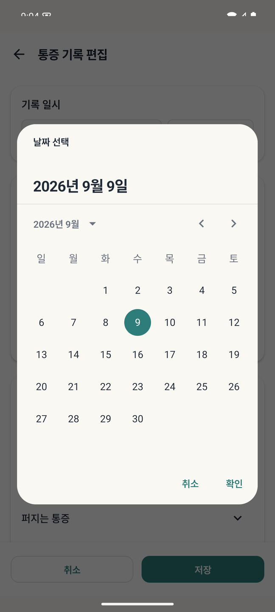
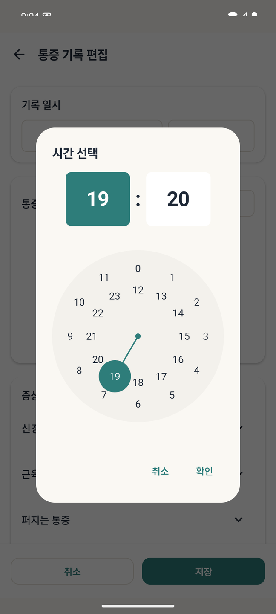
통증 부위 그리기
편집 버튼을 누르면 바디맵 편집 화면으로 들어갑니다. 부위를 그리지 않고 저장해도 되지만, 그려두면 리포트의 부위 비교와 범위 변화를 볼 수 있습니다. 조작법은 다음 장에 있습니다.
증상 유형
통증의 느낌을 카테고리별로 골라 여러 개 선택할 수 있습니다.
- 신경 느낌 — 찌릿찌릿해요, 전기 오는 것 같아요, 타는 것 같아요, 감각이 둔해요 등
- 근육·뼈·관절 느낌 — 뻐근해요, 쑤셔요, 쿡쿡 찌르는 느낌이에요, 당기는 느낌이에요 등
- 그 밖의 카테고리도 목록에서 펼쳐 볼 수 있습니다.
목록에 없는 표현은 각 카테고리의 + 추가로 직접 만들 수 있습니다. 직접 만든 항목은 이후 기록에서 계속 재사용됩니다.
메모
날씨, 수면, 무리한 활동처럼 숫자로 남지 않는 맥락을 적어두면 나중에 원인을 되짚을 때 도움이 됩니다. 메모는 기록 목록의 검색으로 찾을 수 있습니다.
기록을 고치거나 지우려면
저장한 기록의 수정·삭제, 통증 이슈 삭제, 증상·처치 항목 정리는 조작 방법이 각각 다릅니다. 고치기·지우기 장에 모아 두었습니다.
바디맵 사용법
바디맵은 몸 그림 위에 아픈 부위를 직접 칠하는 화면입니다. 앞면과 뒷면을 전환해 각각 기록할 수 있습니다.

세 가지 도구
| 도구 | 하는 일 |
|---|---|
| 🖌 브러시 | 선택한 강도로 부위를 칠합니다. 한 손가락으로 그립니다. |
| 🩹 지우개 | 지울 부위를 터치해 지웁니다. |
| ⚡ 강도 조정 | 이미 칠한 부위를 탭하면 같은 강도로 칠한 영역이 함께 선택되고, +/− 로 강도만 바꿉니다. 다시 그리지 않고 세기만 고칠 때 씁니다. |
통증 강도
1부터 10까지 있고, 숫자가 클수록 색이 진해집니다. 앱 전체에서 같은 색 규칙을 쓰기 때문에, 바디맵의 색과 목록·통계에 보이는 강도 색이 서로 일치합니다.
| 강도 | 표현 |
|---|---|
| 1–2 | 경미해요 |
| 3–4 | 약한 편 |
| 5–6 | 보통 |
| 7–8 | 심한 편 |
| 9–10 | 극심해요 |
같은 기록 안에서 부위마다 다른 강도를 쓸 수 있습니다. 예를 들어 허리 중앙은 8, 다리로 내려오는 저림은 4로 칠하는 식입니다.
브러시 크기
8(가늘게)부터 24(굵게)까지 조절합니다. 손가락 두 개로 벌리면 확대되고, 확대한 상태에서 가늘게 칠하면 관절처럼 좁은 부위를 정확히 표시할 수 있습니다.
손가락 조작
- 한 손가락 — 그리기(또는 지우기)
- 두 손가락 — 확대·축소·이동
- 되돌리기 — 마지막 획을 취소
- 전체 삭제 — 현재 면의 그림을 모두 지웁니다
표시 범위는 앞·뒤 바디맵의 몸 윤곽 안에 칠한 영역을 합쳐 계산합니다. 겹쳐 칠한 부분은 한 번만 세고, 몸 밖은 제외합니다. 몸 전체 바디맵에서 차지하는 비율이며 실제 신체 면적이나 의학적 측정값이 아닙니다. 비교할 때는 비슷한 브러시 굵기와 기록 방식을 유지하세요.
처치 기록하기
홈의 처치 기록에서 시작합니다. 처치는 복약, 물리치료, 주사, 스트레칭, 온·냉찜질처럼 통증에 대해 한 모든 조치를 뜻합니다.
- 기록 일시를 확인합니다효과 분석은 이 시각을 기준으로 전후 통증을 비교합니다. 실제 처치 시각을 넣어주세요.
- 통증 이슈를 선택합니다처치는 반드시 하나의 통증에 연결됩니다. 어떤 통증에 대한 처치인지 선택해야 저장됩니다.
- 처치 카테고리에서 항목을 고릅니다목록에 없으면 + 추가로 직접 만듭니다 — 예: "이부프로펜 400mg".
- 저장합니다

약은 이름과 용량을 함께 적어 항목을 만드세요("타이레놀 500mg"). 용량별로 효과가 다르게 나타날 수 있고, 리포트에도 그대로 표시되어 진료 때 설명하기 쉽습니다.
처치 기록을 누르면 처치 상세 화면이 열립니다. 여기서는 이 처치 전후의 통증, 이 통증에서 해당 처치를 몇 번 썼는지, 평균 효과를 볼 수 있습니다. 수정·삭제도 이 화면에서 하며, 통증 기록과 마찬가지로 통계에 영향을 줍니다.
자료 사진 (MRI·CT·X-ray)
검사 사진을 통증에 붙여 보관하는 기능입니다. MRI·CT·X-ray 판독 사진을 찍어두거나, 붓기·발진처럼 눈에 보이는 상태를 남길 때 씁니다. 진료 때 "그때 찍은 사진"을 바로 꺼내 보여줄 수 있습니다.
사진은 통증 이슈 단위로 저장됩니다. MRI 한 장은 특정 회차의 기록이 아니라 그 질환에 대한 자료이고, 몇 달 뒤에 봐도 계속 유효하기 때문입니다. 그래서 통증 상세 화면에 붙어 있고, 개별 통증 기록에는 붙지 않습니다.
사진 넣기
- 통증 상세 화면을 엽니다하단 기록 탭에서 통증 기록을 누르면 열립니다.
- 자료 사진 카드를 누릅니다바디맵 아래에 있습니다. 사진이 있으면 썸네일과 장수가, 없으면 안내 문구가 보입니다.
- 우하단 + 를 누릅니다사진 선택기가 열립니다. 여러 장을 한 번에 고를 수 있습니다.
통다는 갤러리 전체 접근 권한을 요구하지 않습니다. 안드로이드 기본 사진 선택기를 쓰기 때문에 직접 고른 사진만 앱에 전달됩니다. 선택기 상단에도 그렇게 안내됩니다.
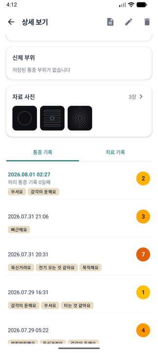
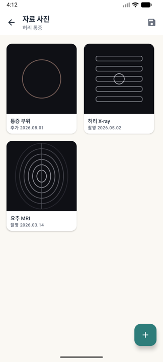
날짜 — "촬영"과 "추가"는 다릅니다
사진마다 날짜가 표시되는데, 앞의 라벨을 보셔야 합니다.
| 표시 | 뜻 |
|---|---|
| 촬영 2026.03.14 | 사진 파일에 기록된 실제 촬영 시각. 카메라로 찍은 사진에는 대개 들어 있습니다. |
| 추가 2026.08.01 | 촬영 정보가 없는 파일(캡처 이미지, 다시 저장한 파일 등)이라 앱에 넣은 날을 대신 보여주는 것입니다. |
목록은 촬영일이 최근인 순서로 정렬됩니다. 3월 MRI 와 5월 X-ray 를 넣으면 넣은 순서와 상관없이 검사 시간 순으로 나열됩니다. 내보낸 파일 이름에도 촬영일이 들어갑니다.
사진 보기·설명 달기
사진을 누르면 전체화면으로 열립니다. 좌우로 넘겨 다른 사진을 보고, 두 손가락으로 확대해 판독지의 글씨나 병변 부위를 자세히 볼 수 있습니다. 상단 ✏️ 로 설명을 답니다 — "2026-03 요추 MRI"처럼 적어두면 나중에 찾기 쉽습니다.
사진 지우기
두 가지 방법이 있고, 둘 다 확인 창을 거칩니다.
- 자료실에서 길게 누르기 → 사진마다 ✕ 가 붙습니다 → 지울 사진의 ✕ → 확인. 끝내려면 상단 완료, 기기 뒤로가기, 또는 아무 사진이나 한 번 탭.
- 전체화면에서 상단 🗑 → 확인.
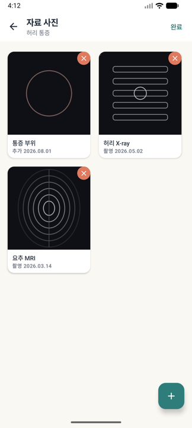
사진을 지우면 앱 안에 복사해 둔 파일이 완전히 삭제되고 되돌릴 수 없습니다. 갤러리의 원본은 그대로지만, 원본을 이미 지우셨다면 그 사진은 복구할 방법이 없습니다.
통증 이슈를 지울 때도 그 통증의 사진이 전부 함께 삭제됩니다.
⚠ 사진은 백업에 들어가지 않습니다
데이터 내보내기로 만드는 .tngd 백업 파일에는 사진이 포함되지 않습니다. 통증·처치 기록만 들어갑니다.
그래서 기기를 바꾸실 때는 사진을 따로 옮기셔야 합니다. 자료실 상단의 사진 내보내기(💾)를 누르고 폴더를 고르면, 그 통증의 사진이 전부 그 폴더로 복사됩니다. 파일 이름에 통증 이름과 촬영일이 들어가 나중에도 알아볼 수 있습니다.
가져오기에서 전부 교체를 고르면 기존 사진도 함께 삭제됩니다. 가져오기 창에도 같은 경고가 표시됩니다.
무료로 쓸 수 있는 만큼
무료 사용 시 통증 하나당 1장까지 광고 없이 저장할 수 있고, 그 이후에는 사진 1장당 짧은 광고 한 편을 보면 계속 추가할 수 있습니다. 프리미엄은 광고 없이 무제한입니다.
장당 20MB가 넘는 사진은 추가되지 않습니다. 휴대폰으로 찍은 판독지 사진은 보통 3~8MB 정도라 대부분 문제되지 않습니다.
앱 전용 저장 공간에 복사본이 저장됩니다. 다른 앱은 열어볼 수 없고, 갤러리에서 원본을 지워도 앱 안의 사진은 남습니다. 인터넷으로 어디에도 올라가지 않습니다 — 자세한 내용은 내 데이터는 어디에 있나요를 보세요.
고치기·지우기
통다에서 무언가를 지우는 방법은 대상에 따라 다릅니다. 기록은 상세 화면의 버튼으로, 통증 이슈와 증상·처치 항목은 길게 누르기로 지웁니다. 실수로 지우기 어렵게 하려고 일부러 다르게 만든 부분입니다.
| 대상 | 수정 | 삭제 |
|---|---|---|
| 통증 기록 1건 | 상세 보기 → 상단 ✏️ | 상세 보기 → 상단 🗑 |
| 처치 기록 1건 | 처치 상세 → 편집 | 처치 상세 → 삭제 |
| 통증 이슈 | 통증 카드 길게 누르기 → 관리 → 수정(이름 변경); 상태 변경은 지원하지 않습니다 | 통증 선택에서 길게 누르기 → 관리 → 삭제 → 확인 |
| 증상·처치 항목 | 이름 변경은 없습니다 (새로 추가) | 칩을 길게 누르기 → ⊖ |
| 자료 사진 | 설명(캡션)은 전체화면에서 ✏️ 로 수정 | 자료실에서 길게 누르기 → ✕, 또는 전체화면 🗑 |
길게 누르기가 작동하는 네 곳
목록에서 항목을 빼는 곳은 모두 길게 누르기로 통일되어 있습니다. 눌러야 할 곳과 배지 모양만 다릅니다.
| 화면 | 길게 누르는 대상 | 배지 | 흔들리는 범위 | 끝내기 |
|---|---|---|---|---|
| 통증 선택 | 통증 카드 | 관리창: 이름 변경 / 삭제 | 모든 카드 | 상단 완료 |
| 통증 기록 | 증상 유형 칩 | ⊖ | 그 칩의 카테고리만 | 카테고리 옆 완료 |
| 처치 기록 | 처치 항목 칩 | ⊖ | 그 칩의 카테고리만 | 카테고리 옆 완료 |
| 자료 사진 | 사진 타일 | ✕ | 모든 사진 | 상단 완료 |
통증 카드와 자료 사진은 확인 창을 거칩니다 — 둘 다 지우면 되돌릴 수 없기 때문입니다(사진은 파일까지 삭제). 반면 칩은 ⊖ 를 누르는 즉시 목록에서 빠집니다. 과거 기록에 남은 항목은 그대로라 되돌릴 필요가 크지 않기 때문입니다.
통증 기록 1건 고치기·지우기
- 기록을 엽니다하단 기록 탭에서 통증 기록을 누르거나, 홈의 최근 통증 카드를 누릅니다. 상세 보기가 열립니다.
- 상단 오른쪽 아이콘을 씁니다📄 리포트 · ✏️ 편집 · 🗑 삭제 — 리포트는 이 통증 이슈의 선택 기간을 내보내고, 편집·삭제는 지금 보이는 기록에 적용됩니다.
- 다른 기록으로 옮기려면 ← → 화살표제목 아래 1 / 50 처럼 몇 번째 기록인지 표시됩니다. 옮긴 뒤 편집·삭제를 누르면 옮겨간 그 기록이 대상이 됩니다. 지우기 전에 화면의 날짜·강도를 확인하세요.
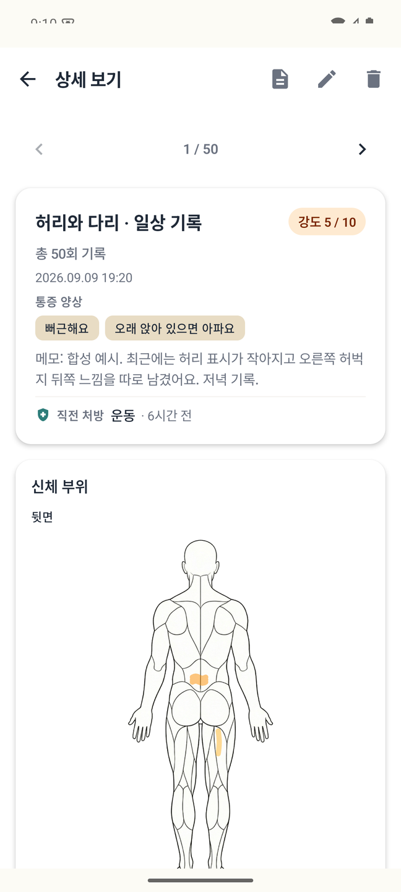
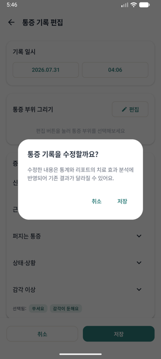
편집을 누르면 기록 화면이 그때 저장한 내용 그대로 열립니다. 일시·바디맵·증상·메모를 모두 고칠 수 있고, 저장을 누르면 경고가 한 번 뜹니다 — "수정한 내용은 통계와 리포트의 치료 효과 분석에 반영되어 기존 결과가 달라질 수 있어요". 여기서 저장을 한 번 더 눌러야 반영됩니다.
삭제도 확인 창을 거칩니다. 확인하면 바로 지워지고 되돌릴 수 없습니다.
처치 기록 1건 고치기·지우기
기록 목록의 처치 항목(또는 홈의 최근 처치 카드)을 누르면 처치 상세가 열리고, 상단에 편집·삭제가 있습니다. 편집 후 저장할 때 통증 기록과 같은 방식으로 경고를 한 번 확인합니다.
통증·처치 기록을 수정하거나 삭제하면 통계와 리포트의 처치 효과 분석 결과가 함께 달라집니다. 효과는 처치 시각 전후의 통증 기록을 비교해 계산하므로(처치 효과 계산 방식), 기록 하나가 바뀌면 그 처치의 평가도 바뀝니다. 앱이 저장 전에 경고를 띄우는 이유입니다.
통증 이름 관리 — 이름 변경과 삭제
- 통증 선택 화면을 엽니다홈 → 통증 기록에서 통증 카드를 길게 누릅니다. 관리창이 열립니다.
- 수정(이름 변경)을 선택합니다새 이름을 입력하고 확인하세요. 공백뿐인 이름과 기존과 같은 이름은 저장할 수 없습니다. 연결된 기록은 그대로 유지됩니다.
- 삭제는 별도로 확인합니다관리창의 삭제를 누른 뒤 확인해야 통증과 연결된 통증·처치 기록 및 자료 사진이 삭제됩니다. 되돌릴 수 없습니다.
- 취소와 완료창의 취소로 닫고, 카드 관리 상태는 완료 또는 뒤로가기로 끝냅니다.
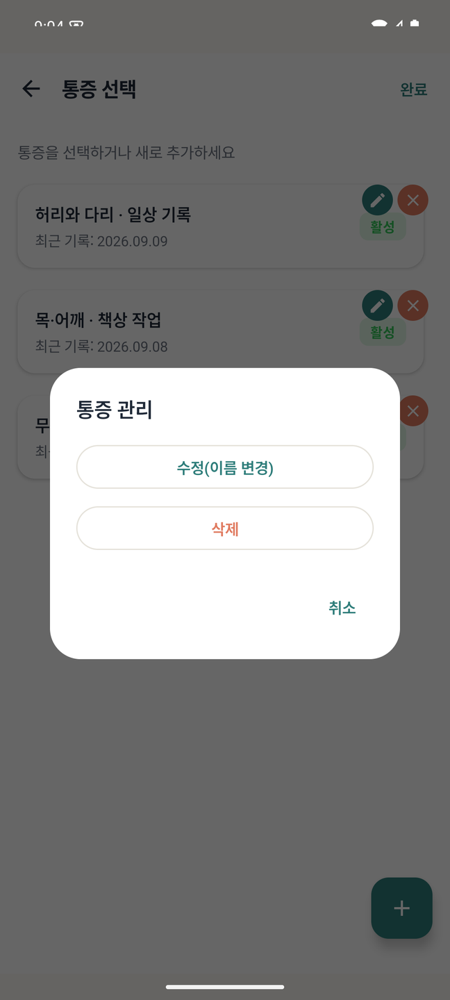
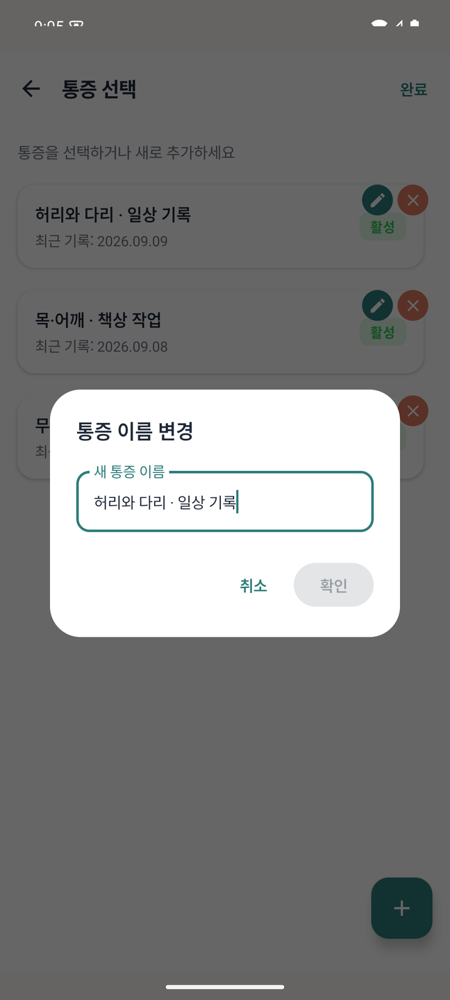
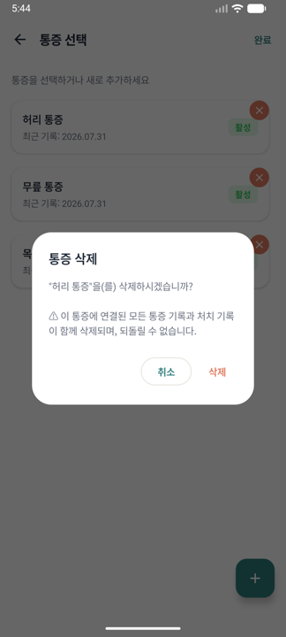
증상·처치 항목 정리 — 길게 누르기
두 화면의 칩이 똑같이 동작합니다.
- 통증 기록 화면의 증상 유형 칩 — "찌릿찌릿해요", "뻐근해요" 같은 느낌 목록
- 처치 기록 화면의 처치 카테고리 칩 — "이부프로펜", "마사지" 같은 처치 목록
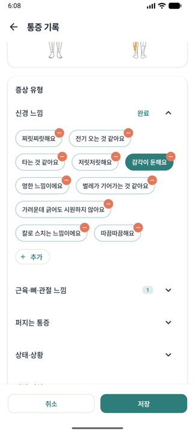
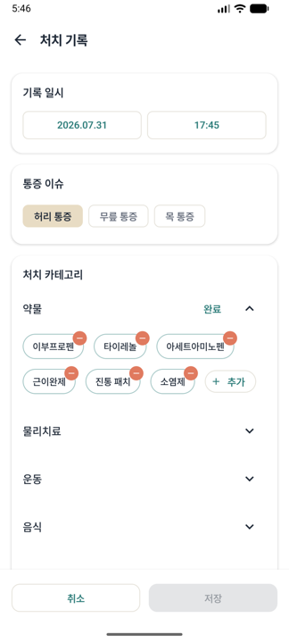
- 칩을 길게 누릅니다그 칩이 속한 카테고리의 칩들만 흔들리며 ⊖ 가 붙습니다(다른 카테고리는 그대로). 카테고리 제목 옆에 완료 가 생깁니다.
- 목록에서 뺄 칩의 ⊖ 를 누릅니다확인 창 없이 바로 처리됩니다. 아래 표를 참고하세요.
- 카테고리 제목 오른쪽의 완료를 누릅니다흔들림이 끝나고 다시 평소처럼 선택할 수 있습니다.
| 어떤 칩인지 | ⊖ 를 누르면 |
|---|---|
| 직접 추가한 항목 (+ 추가로 만든 것) | 목록에서 완전히 삭제됩니다. 필요하면 + 추가로 다시 만들 수 있습니다. |
| 앱 기본 항목 | 목록에서 숨겨집니다. 삭제가 아니라 안 보이게 하는 것입니다. |
- 어느 경우든 이미 저장한 과거 기록은 그대로 유지됩니다. 앞으로 고를 목록에서만 빠집니다.
- 지금 작성 중인 기록에서 그 항목을 골라 두었다면, 선택도 함께 해제됩니다.
숨긴 기본 항목은 현재 앱 안에서 되살릴 방법이 없습니다. 같은 이름으로 + 추가를 해도 다시 나타나지 않습니다. 목록이 길어서 정리하고 싶은 마음이 들더라도, 기본 항목은 되도록 그냥 두시고 자주 쓰는 항목을 + 추가로 만들어 쓰는 편이 안전합니다.
설정 → 데이터 → 데이터 초기화는 모든 통증 이슈·기록·처치를 한 번에 지웁니다. 이것도 되돌릴 수 없으니 백업을 먼저 확인하세요.
기록 찾아보기
기록 목록
하단 기록 탭입니다. 전체 / 통증 / 처치 탭으로 나눠 보고, 검색창에서 메모와 처치 내용을 검색할 수 있습니다. "주사"로 검색하면 주사 관련 처치만, "야근"으로 검색하면 그렇게 메모한 통증 기록만 나옵니다.

상세 보기
통증 이슈를 누르면 그 통증의 상세 화면이 열립니다.
- 통증 기록 탭 — 기록별 강도, 통증 양상, 바디맵, 메모
- 치료 기록 탭 — 이 통증에 연결된 처치 이력
- 직전 처방 — 각 통증 기록 시점에서 가장 최근에 한 처치와 그 시간 간격(1시간 이내 / N시간 전 / N일 전)
상세 화면은 항목별 이력을 보는 곳이고, 기간 단위의 집계와 그래프는 통증 분석에 있습니다.
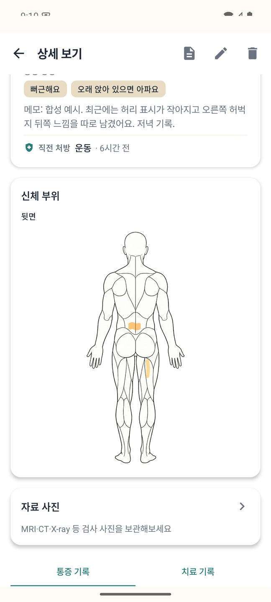
통증 분석
하단 통계에서 분석할 통증을 선택한 뒤 하루 · 한달 · 추적을 전환합니다. 아래 화면은 가상 사용 예시입니다.


하루와 한달
하루는 날짜를 선택하거나 좌우로 넘겨 시간대별 기록을 봅니다. 원형 시간표는 해당 시간대의 최고 강도를 표시합니다. 기록하지 않은 시간을 통증 0으로 단정하지 마세요. 한달 달력은 날짜별 최고 강도를 표시하고, 기록 없는 날은 비워 둡니다. 날짜를 누르면 해당 기록을 볼 수 있습니다.
한달 상단의 최악 대비 지금은 그달 최고 강도와 가장 최근 기록일의 최고 강도 차이입니다. 가장 좋았을 때 대비 최악은 날짜별 최고 강도 중 가장 높은 값과 가장 낮은 값의 차이입니다. 두 날짜 이상이 있어야 계산합니다. 월별 일평균 그래프와 두 카드의 기준은 서로 다릅니다.
추적의 기간 선택과 무료 요약
기본은 최근 30일입니다. 직접 지정은 프리미엄에서 시작일과 종료일을 선택합니다. 선택 기간과 바로 앞의 같은 길이 기간을 비교합니다. 무료에서 이전 기간을 열람할 수 없으면 현재 기간 요약·표시 범위 흐름·현재 바디맵을 보여줍니다. 이는 이전 기록이 없다는 뜻이 아닙니다. 실제로 이전 기록이 없는 경우에는 별도의 기록 없음 안내가 나옵니다.
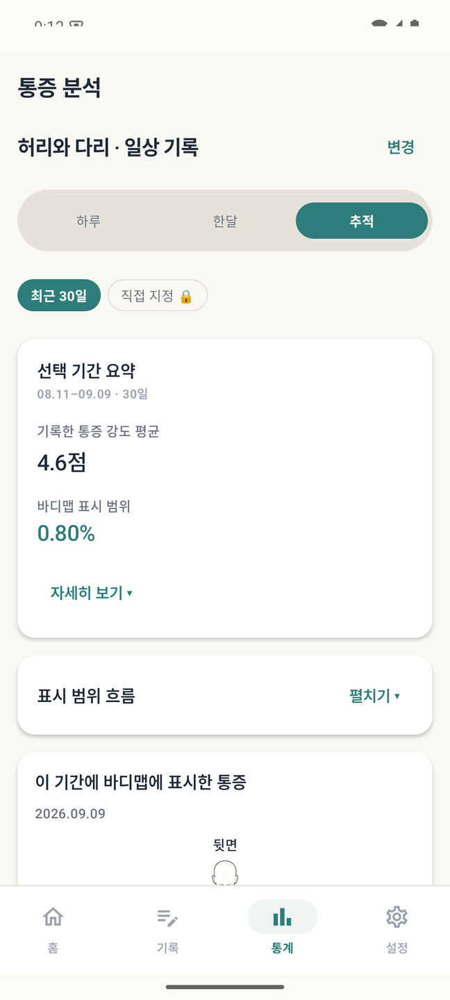
숫자의 기준과 자세히 보기
- 기록한 통증 강도 평균: 같은 날짜의 유효한 강도들을 먼저 평균내고, 그 일평균들을 다시 평균냅니다. 기록이 많은 하루가 더 큰 비중을 갖지 않습니다.
- 바디맵 표시 범위: 각 날짜에서 가장 넓게 그린 기록의 범위를 골라 그 날짜별 최대값을 평균냅니다. 겹친 획은 한 번만 세며 앞·뒤 몸 윤곽을 기준으로 계산합니다.
- 자세히 보기: 최고 강도, 범위 차이(%p), 기록한 날·강도 기록일·바디맵 기록일·범위 계산에 사용한 날을 확인합니다. %p는 두 백분율의 차이입니다.
기록 없음·강도 없음·바디맵 없음·계산 불가는 0이 아닙니다. 각 지표에 유효한 기록만 사용하며 기록 빈도가 다르면 해석도 달라집니다. 통계와 보고서는 같은 계산 함수를 사용하지만 선택 기간과 무료 열람 범위가 같아야 비교할 수 있습니다.
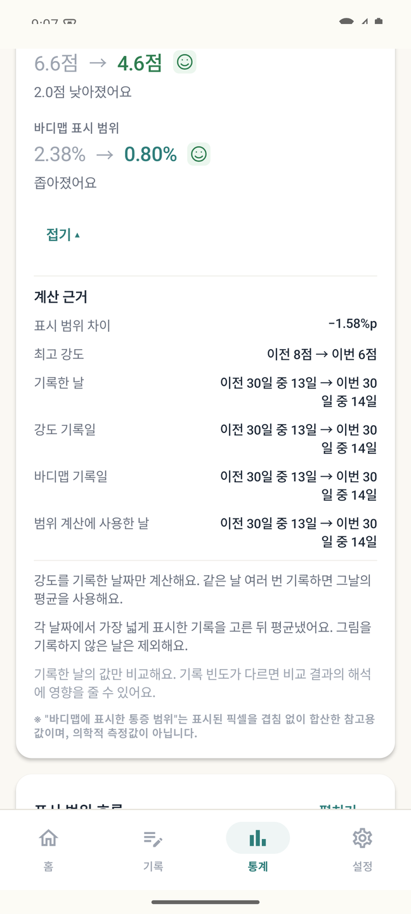
표시 범위 흐름과 전후 바디맵
표시 범위 흐름 → 펼치기에서 날짜별 최대 표시 범위를 봅니다. 그림 없는 날은 범위 평균에서 제외되며, 점 사이의 선은 기록 사이를 잇는 표시입니다. 매일의 실제 상태를 측정한 것이 아닙니다.
표시 위치 비교는 각 기간의 마지막 유효 그림을 나란히 보여줍니다. 기간 전체 평균이나 가장 넓은 그림이 아니므로 위의 평균 범위와 값이 다를 수 있습니다.
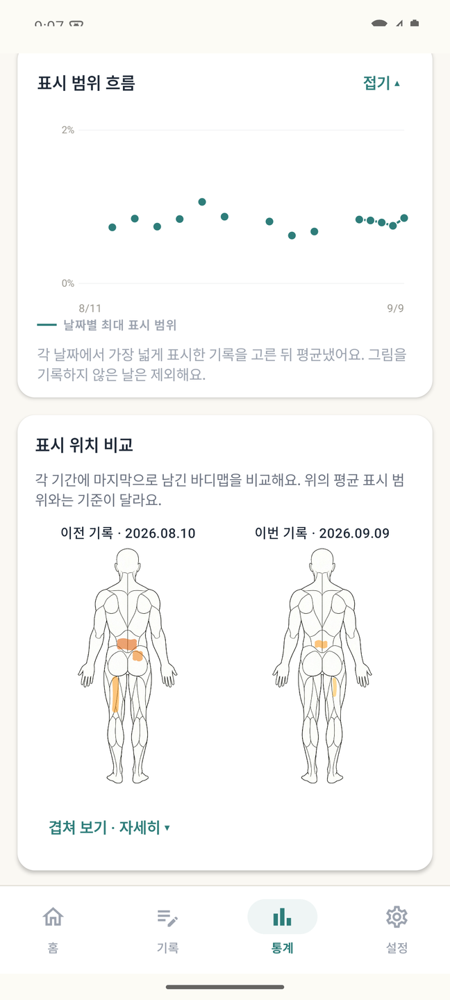
겹쳐 보기 · 자세히의 회색은 두 기록 모두 표시, 주황·갈색은 이번 기록에만 표시, 녹색은 이전 기록에만 표시한 곳입니다. 표시 위치의 차이를 뜻하며 악화·회복을 진단하는 색이 아닙니다.
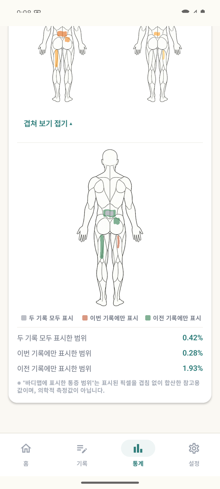
이번 달 인사이트와 처치 기록
월별 인사이트와 처치 순위는 입력한 기록을 요약합니다. 처치 횟수 순위와 전후 강도 감소량 순위는 다를 수 있습니다. 처치 효과 계산 방식에서 시간 범위와 기록 쌍의 기준을 확인하세요. 인과관계나 특정 처치의 효능을 입증하지 않습니다.
처치 효과 계산 방식
통다의 효과 분석은 단순하고 투명한 규칙 하나에 기반합니다. 숫자를 어떻게 읽어야 하는지 알아두는 것이 중요합니다.
규칙
- 처치 시각을 기준으로 앞 48시간 이내의 가장 가까운 유효 강도 기록을 "직전", 뒤 48시간 이내의 가장 가까운 유효 강도 기록을 "직후"로 잡습니다.
- 두 강도의 차이를 그 처치의 변화량으로 봅니다.
- 하나의 전·후 기록 쌍은 가장 먼저 한 처치 하나에만 귀속됩니다. 같은 쌍 안에 처치가 여러 건이면 나중 처치는 그 쌍으로 계산되지 않습니다.
- 비교 가능한 사례가 여러 번이면 평균을 냅니다.
전후 48시간 안에 양쪽 통증 기록이 모두 있어야 계산됩니다. 한쪽이라도 없으면 그 처치는 "비교할 기록이 없음"으로 표시합니다. 통계·리포트·처치 상세는 같은 규칙을 사용하지만, 선택 기간과 열람 가능한 기록 범위가 다르면 결과도 달라질 수 있습니다.

- 인과관계가 아닙니다. 기록상의 변화일 뿐, 통증이 저절로 나아진 것인지 처치 때문인지 구분하지 못합니다.
- 표본이 작습니다. 3회 미만이면 앱이 "기록이 적어 참고용"이라고 표시합니다.
- 기록 습관에 좌우됩니다. 아플 때만 기록하고 나아지면 기록하지 않으면, 실제보다 효과가 낮게 보일 수 있습니다.
- 의학적 유의성 검정이 아니며, 치료 결정의 근거로 단독 사용하기에 적합하지 않습니다.
가장 정확해지는 사용법은 단순합니다. 처치 직전과 몇 시간 뒤에 각각 통증을 기록하는 것입니다. 그 두 점이 있으면 효과 비교가 성립합니다.
알림 설정
홈의 통증·처치 알림 설정 카드 또는 설정에서 들어갑니다. 기록을 잊지 않도록 리마인더를 만드는 화면입니다.
알림 만들기
- 우하단 + 버튼을 누릅니다
- 종류를 고릅니다통증 또는 처치 — 알림 문구와 빠른 기록 동작이 달라집니다.
- 트리거를 고릅니다시간은 매일 정해진 시각에, 간격은 15분·30분·1시간·2시간·4시간 또는 직접 입력한 분 단위로 반복합니다.
- 요일을 고릅니다매일 / 평일 / 주말 / 1회만 중에서 선택합니다. "1회만"은 한 번 울린 뒤 자동으로 꺼집니다.
- 라벨을 붙입니다(선택)"아침 통증 체크"처럼 적으면 알림에 함께 표시됩니다.


저장하면 다음 알림 시각이 카드에 미리 표시되므로 설정이 맞는지 바로 확인할 수 있습니다.
알림에서 바로 기록하기
알림에는 두 개의 버튼이 있습니다.
- 빠른 기록 — 앱을 열지 않고 직전 기록과 같은 내용으로 저장합니다. 통증이면 마지막 강도로, 처치면 마지막에 한 처치로 기록됩니다. 복사할 수 있는 기록은 최근 24시간 이내의 것이며, 그런 기록이 없으면 복사하지 않고 알려줍니다. 이때 알림을 누르면 상세 기록 화면으로 넘어갑니다.
- 상세 기록 — 앱의 기록 화면을 엽니다.
권한
- 알림 권한 — 알림이 화면에 표시되려면 필요합니다. 화면 상단 안내에서 바로 요청할 수 있습니다.
- 정확한 알람 권한(선택) — 허용하면 지정한 시각에 정확히 울립니다. 없으면 기기 사정에 따라 조금 늦게 울릴 수 있습니다.
대부분 제조사의 배터리 절약 기능 때문입니다. 시스템 설정 → 앱 → 통다 → 배터리에서 제한 없음으로 바꿔주세요. 자주 묻는 질문에 기기별 확인 순서가 있습니다.
홈 화면 위젯
홈 화면에 위젯을 올리면 앱을 열지 않고도 최근 통증을 확인하고 기록 화면으로 바로 갈 수 있습니다. 홈 화면을 길게 눌러 위젯 목록에서 통다를 선택하세요.
위젯을 놓은 뒤 설정에서 다음을 조절합니다.
- 배경 색상과 투명도 — 완전 투명부터 불투명까지
- 표시 모드 — 자동 / 라이트 / 다크
리포트 내보내기
설정 → 리포트 내보내기에서는 전체 기간 또는 기간 선택을 고릅니다. 기간 선택에서는 시작일·종료일을 확인합니다. 두 경우 모두 다음으로 통증을 선택하고 저장 위치를 정해 PDF를 만듭니다. 통증 상세의 리포트 아이콘은 기간 선택 없이 현재 통증의 이용 가능한 전체 범위를 PDF로 저장합니다. 아이콘을 누른 뒤 저장 위치를 정하면 됩니다.
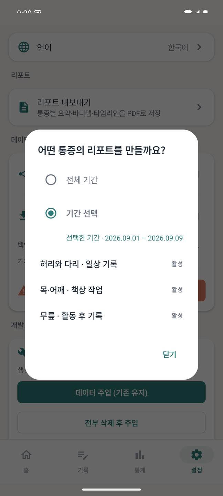
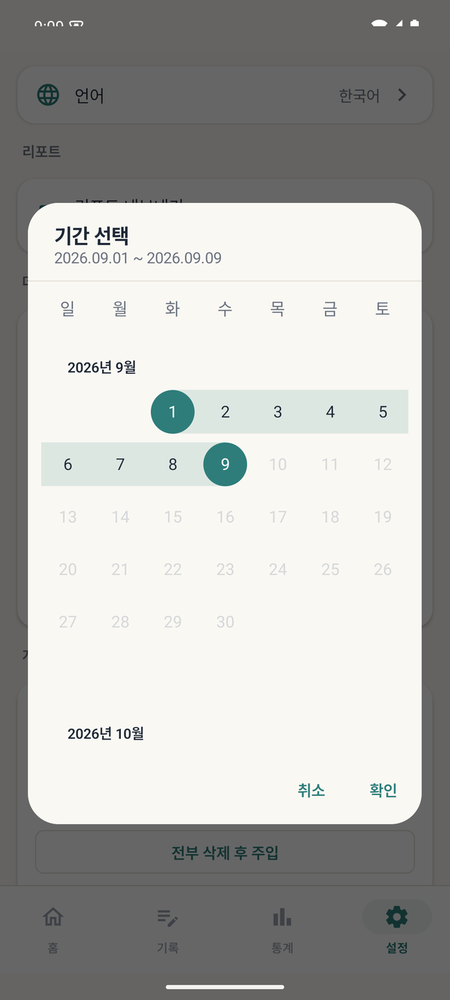
리포트에 담기는 내용
| 구성 | 내용 |
|---|---|
| 요약 | 상태, 기록 기간, 기록 횟수, 평균·최대·최소 강도, 처치 횟수 |
| 통증 부위 비교 | 기간 전체를 겹친 누적 바디맵과 주요 시점(최초·가장 넓음·가장 높음·최근) |
| 핵심 요약 | 평균 강도, 최근 7일, 최대 강도, 초기 대비 추세, 통증이 잦은 시간대 |
| 통증 추이 | 일별 평균 강도 그래프에 처치한 날을 표시 |
| 동반 증상 빈도 | 많이 기록된 증상 유형 순서 |
| 치료 반응 | 처치별 사용 횟수와 전후 통증 변화 (계산 방식은 처치 효과 계산 방식) |
| 타임라인 · 부록 | 기간 내 모든 통증·처치 기록의 시간순 목록 |
진료 시간은 짧습니다. 리포트를 미리 인쇄하거나 PDF를 열어두고, 요약과 치료 반응 두 부분을 먼저 보여주세요. 나머지는 질문이 나올 때 펼치면 됩니다.
저장된 PDF는 파일 하나로 완결되어 있어 인터넷 없이 열리고, 메일·메신저로 그대로 보낼 수 있습니다. 저장이 끝나면 열기로 바로 확인할 수 있습니다.
무료 사용 시 리포트를 내보낼 때 짧은 보상형 광고가 나올 수 있습니다. 설정에서 시작하든 통증 상세 화면에서 시작하든 규칙은 같습니다. 광고를 불러오지 못하면 그냥 내보내기가 진행되므로, 광고 때문에 데이터를 꺼내지 못하는 일은 없습니다. 프리미엄은 광고가 없습니다.
무료 리포트에는 최근 30일의 기록이 담깁니다 — 통계 화면과 같은 기준입니다. 리포트 첫머리에도 그 안내가 들어가며, 전체 기간은 프리미엄에서 열립니다. 최근 30일 안에 기록이 없는 통증은 리포트 대상 목록에서 선택할 수 없습니다.
무료에서는 선택한 기간을 최근 30일 열람 범위와 겹치는 부분으로 제한합니다. 전체 기간을 눌러도 무료 범위는 유지됩니다. 최근 범위보다 완전히 이전인 기간은 내보낼 수 없으며 안내가 표시됩니다. 프리미엄에서는 전체 이력을 선택할 수 있습니다.
기간을 지정한 보고서에는 직전 동기간 비교와 표시 범위가 포함됩니다. 일평균 강도의 평균·일별 최대 범위의 평균·각 기간 마지막 유효 바디맵이라는 서로 다른 기준을 함께 읽어주세요.
백업과 복원
기록이 기기 안에만 있으므로, 기기를 바꾸거나 앱을 삭제하기 전에는 반드시 백업하세요. 설정 → 데이터에서 합니다.
데이터 내보내기
백업 파일에는 통증·처치 기록만 담기고 자료 사진은 포함되지 않습니다. 기기를 바꾸실 때는 자료실의 사진 내보내기로 사진을 따로 옮겨주세요.
.tngd 확장자의 백업 파일 하나가 만들어집니다. 저장 위치는 직접 고르며, 클라우드 드라이브나 메일로 보관해도 됩니다. 파일 안의 내용은 암호화되어 있어 텍스트 편집기로 읽을 수 없습니다. 별도의 비밀번호를 입력하지는 않습니다.
데이터 가져오기
백업 파일을 선택하면 처리 방식을 묻습니다.
- 전부 교체 — 기존의 모든 통증·기록·처치를 지우고 파일 내용으로 바꿉니다. 새 기기로 옮길 때 씁니다.
- 합치기 — 기존 데이터를 유지한 채 파일 내용을 추가합니다. 두 기기의 기록을 모을 때 씁니다.
전부 교체는 되돌릴 수 없습니다. 현재 기기에 남길 기록이 있다면 먼저 내보내기로 백업한 뒤 가져오기를 실행하세요. 가져올 수 있는 백업 파일의 최대 크기는 10MB입니다.
데이터 초기화
설정의 데이터 초기화는 모든 통증 이슈·기록·처치를 삭제합니다. 되돌릴 수 없으니 백업을 먼저 확인하세요.
언어·글자 크기
언어
설정 → 언어에서 시스템 기본값 / 한국어 / English를 고릅니다. 기기 언어와 무관하게 앱 언어만 바꿀 수 있습니다. 선택하면 바로 적용되며, 이 설명서의 언어도 앱 설정을 따라 열립니다.
직접 만든 증상·처치 항목은 입력한 언어 그대로 남습니다. 앱이 기본 제공하는 항목만 번역되어 표시됩니다.
글자 크기
설정 → 글자 크기에서 작게 / 보통 / 크게 / 아주 크게를 고릅니다. 미리보기로 확인하며 조절할 수 있고, 앱 전체에 적용됩니다.
내 데이터는 어디에 있나요
- 기록은 기기 안에 저장됩니다. 계정 가입이나 로그인이 없고, 통증·처치 기록을 서버로 올리지 않습니다.
- 백업 파일은 사용자가 관리합니다. 내보내기로 만든
.tngd파일을 어디에 둘지는 직접 정합니다. - 홈 화면의 날씨는 현재 위치를 대략적인 정확도(도시 수준)로 확인해 외부 날씨 서비스에서 받아옵니다. 표시용이며 통증 기록에는 저장되지 않습니다. 위치 권한을 허용하지 않아도 앱의 나머지 기능은 그대로 작동합니다.
- 광고는 무료 사용 시 표시되며, 광고 제공 사업자의 정책이 함께 적용됩니다.
- 화면 사용 정보 — 화면 열기·버튼 누르기 같은 익명 사용 이벤트를 수집합니다. 이 이벤트에는 통증 강도·증상·부위·메모·처치 이름·기록 날짜와 개수·위치를 담지 않습니다.
자세한 내용은 개인정보처리방침에서 확인하세요. 앱에서는 설정 → 앱 정보 → 개인정보처리방침으로 열 수 있습니다.
자주 묻는 질문
알림이 오지 않습니다.
순서대로 확인해보세요.
- 알림 설정 화면 상단에 권한 안내가 남아 있는지 — 있으면 권한 요청을 눌러 허용합니다.
- 시스템 설정 → 앱 → 통다 → 알림이 켜져 있는지.
- 시스템 설정 → 앱 → 통다 → 배터리를 제한 없음으로 변경. 삼성·샤오미·화웨이 등은 절전 기능이 알림을 지연시키거나 막는 경우가 많습니다.
- 시각이 조금씩 밀린다면 알림 설정의 정확한 알람 권한을 허용합니다.
- 요일 설정이 "1회만"이면 한 번 울린 뒤 자동으로 꺼집니다.
기기를 바꾸려고 합니다. 기록을 옮기려면?
이전 기기에서 설정 → 데이터 → 데이터 내보내기로 .tngd 파일을 만들어 클라우드나 메일로 옮기고, 새 기기에서 데이터 가져오기 → 전부 교체를 선택하세요. 프리미엄은 같은 Google 계정으로 로그인한 뒤 구매 복원을 누르면 됩니다.
기록을 실수로 지웠습니다. 되돌릴 수 있나요?
앱 안에는 되돌리기가 없습니다. 이전에 내보낸 백업 파일이 있다면 그 파일을 가져와 복원할 수 있습니다. 정기적으로 내보내기를 해두는 것을 권합니다.
통증 이름을 잘못 지었어요. 바꿀 수 있나요?
통증 선택에서 카드를 길게 누른 뒤 수정(이름 변경)을 선택하세요. 이름을 바꿔도 기록은 유지됩니다. 상태 변경은 지원하지 않으며 새 통증은 활성으로 시작합니다. 통증 이름 관리를 참고하세요.
실수로 기본 증상(또는 처치) 항목을 숨겼습니다.
안타깝지만 앱 안에서 되살릴 방법이 없습니다. 같은 이름으로 + 추가를 해도 숨김이 풀리지 않습니다. 같은 뜻의 항목을 조금 다른 이름으로 직접 추가해 쓰시는 것이 현재의 유일한 우회 방법입니다(예: "쑤셔요" → "쑤심").
과거 기록에 들어 있던 항목은 그대로 남아 있으니 통계와 리포트는 영향을 받지 않습니다.
통계가 "데이터 부족"으로 나옵니다.
추세와 효과 계산에는 최소한의 기록 수가 필요합니다. 특히 처치 효과는 처치 전후 48시간 안에 통증 기록이 있어야 계산됩니다(처치 효과 계산 방식). 처치할 때 직전과 몇 시간 뒤 통증을 함께 기록하면 빠르게 채워집니다. 비교 사례가 3회 이상 모이면 신뢰도 안내가 사라집니다.
PDF가 열리지 않습니다.
기기에 PDF를 열 수 있는 앱이 없을 때 나오는 안내입니다. 파일은 정상적으로 저장되었으니, PDF 뷰어(예: Google Drive, Files) 를 설치한 뒤 저장한 위치에서 열면 됩니다. 파일을 PC로 옮겨 열어도 됩니다.
같은 시간에 아픈 부위가 여러 곳이면 어떻게 기록하나요?
한 통증 이슈로 추적하는 범위라면 바디맵에서 부위별로 다른 강도로 칠하면 됩니다. 원인이 다른 별개의 통증이라면(예: 허리 통증과 편두통) 통증 이슈를 각각 만드는 편이 좋습니다. 분석과 리포트가 이슈 단위로 나오기 때문입니다.
기록을 나중에 몰아서 입력해도 되나요?
됩니다. 기록 일시를 실제로 아팠던 시각으로 바꿔 저장하세요. 다만 시간대별 패턴과 처치 효과가 이 시각을 기준으로 계산되므로, 기억에 의존한 시각은 분석의 정확도를 떨어뜨립니다.
직접 만든 증상·처치 항목을 지울 수 있나요?
항목 목록에서 사용하지 않는 항목을 끌 수 있습니다. 이미 그 항목으로 저장된 과거 기록은 그대로 유지됩니다.
의료 관련 안내
통다는 기록과 정리를 돕는 도구이며, 의료기기가 아닙니다. 질병의 진단·치료·예방을 목적으로 하지 않습니다.
앱이 보여주는 추세와 처치 효과는 사용자가 입력한 기록에서 계산한 참고 지표입니다. 통계적 유의성이나 의학적 인과관계를 보장하지 않으며, 약의 복용·중단·변경을 포함한 어떤 치료 결정도 앱의 숫자만으로 내리지 마세요. 반드시 의사·약사와 상의하시기 바랍니다.
갑작스럽고 심한 통증, 처음 겪는 형태의 통증, 마비·발열·의식 저하 등이 함께 나타나는 통증은 기록보다 즉시 진료가 우선입니다.
문의나 개선 제안은 Google Play 스토어의 통다 페이지를 통해 보내주세요.